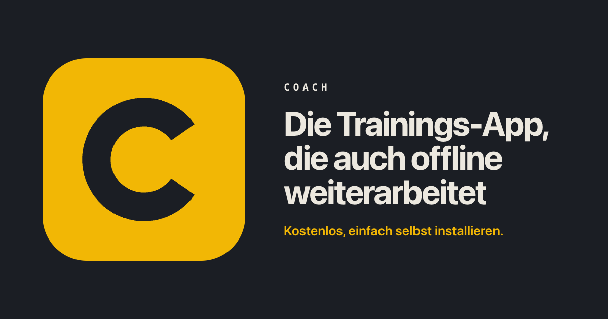
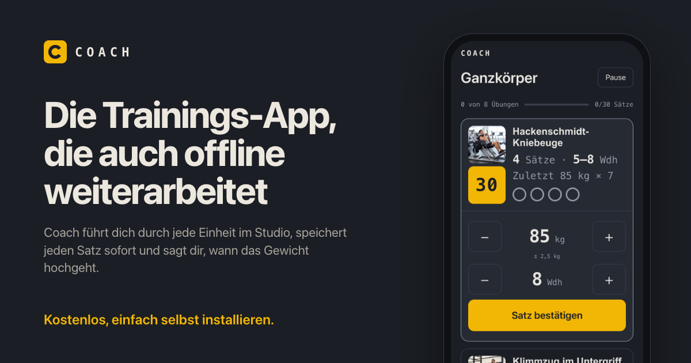
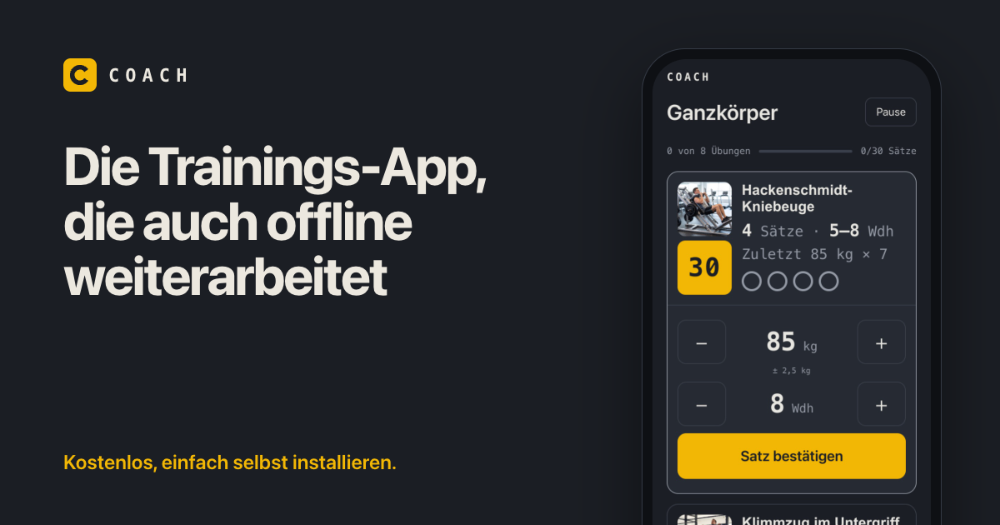
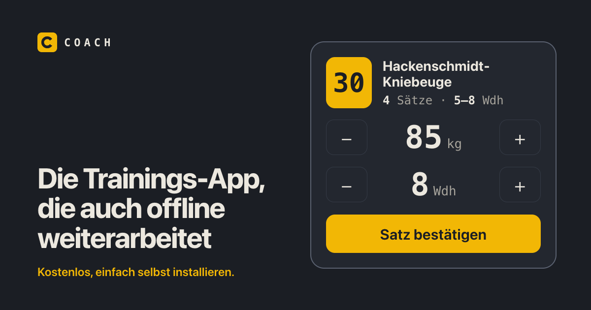

Das Zeichen groß links, rechts Überschrift und Aufhänger der Startseite.

Überschrift und Unterzeile der Startseite, rechts der echte Studio-Bildschirm.

Wie B, nur ohne die Unterzeile.

Überschrift links, rechts die Studio-Kachel nachgebaut: Gerätenummer, Regler, „Satz bestätigen“.
